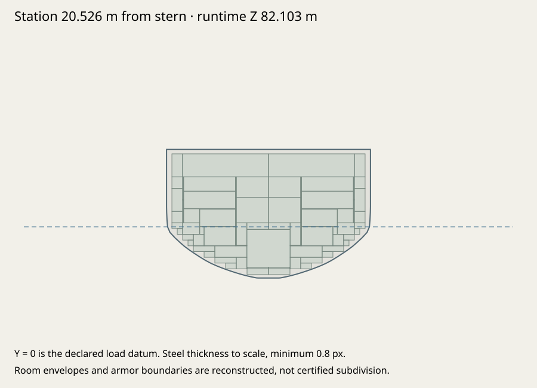
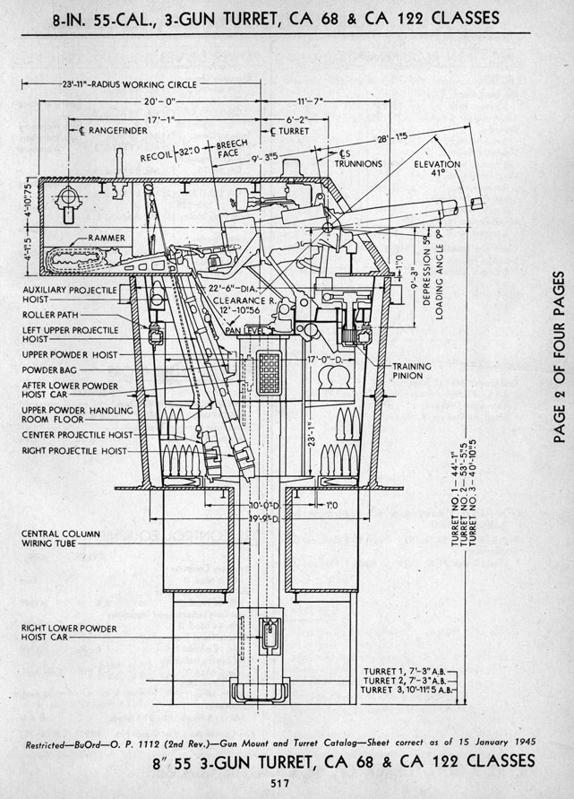
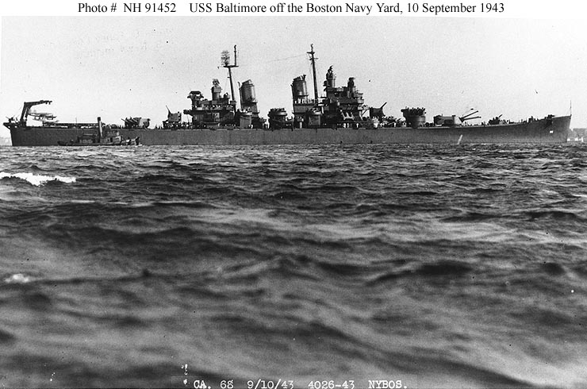

USS Baltimore · fidelity 01
October 1943 exterior; 24 ft 2 in limiting keel draft, not navigational draft. Matched pre-pass and current exported geometry, documented dimensions, structural probes and historical evidence. Both authored stages use the same twelve fixed cameras.
Build 161a0051b7b1 · 260,522 triangles · 126 meshes. Engineering verification is not historical certification.
Identical fixed cameras; no rescaling between authored stages.
Current GLB · 161a0051b7b1Preserved original · 63c634e8a5b5
Dimensions and mounting datums
| Measurement | Exported | Target | Deviation | Build tolerance | Evidence |
|---|
| length | 205.2574 m | 205.2574 m | +0.0000 m | ±0.025 m | navships-250-010 |
|---|
| beam | 21.5900 m | 21.5900 m | +0.0000 m | ±0.025 m | navships-250-010 |
|---|
| draft | 7.3660 m | 7.3660 m | +0.0000 m | ±0.025 m | navships-250-010 |
|---|
| waterlineLength | 202.3872 m | 202.3872 m | -0.0000 m | ±0.005 m | navships-250-010 |
|---|
Actual transformed hull triangles, not accessor bounds. 19,656 hull triangles; 0 nonmanifold edges; 0 degenerate faces. 120 room envelopes fit the loft. All 9 mounting-axis export checks pass. Tolerances check authored datums; source uncertainty remains separate.
Measurements, axes and probes · Modeling specification · Editable blueprint · Export/articulation checks
Hull, protection and provisional spaces

Authored hull and deckhouse surfaces take CPU hits. Exterior armor replaces nearby nominal skin; open hangars stay open. Gunhouse facets move with their original joints. Only hull contacts create sea breaches. Nominal plating, ballistics and flooding capacities are estimates.
midship-belt: Port main belt (152.4 mm) → Starboard main belt (152.4 mm)
protected-deck: Protective deck (63.5 mm)
bow: hull
stern: hull
bridge: bridge-pilot-house
empty-air: MISS
All twelve registered before/after views
Live game review
Historical runtime evidence · reviewed export 0079ff92853a, current export 161a0051b7b1. Preserved pre-master-integration WebGPU run. A newer export is not silently certified by these earlier captures; see the fleet integration report.
Orca / WebGPU. UI battery firing and reset records are distinct from deliberately seeded structural shots. Canvas-only images omit the HTML HUD; they are direct live renderer captures, not Blender renders. Frame rates were affected by desktop load and tab occlusion; these are functional checks, not a performance certification. Exact-hash runtime records
Historical evidence and unresolved differences
No historical accuracy percentage. Exact offsets, many fitting locations, nominal plating and internal room boundaries remain approximations. See discrepancies.md and the source register. Raster overlays use one uniform scale per source sheet; unresolved source/datum mismatch remains visible.
Discrepancy register · Full source register · Raster registrations · Credits

Primary OP 1112 turret section. Trunnion, rear extent and roof height retained; width and protection schedule remain unresolved. · op1112-517
Dated 1943 Navy photograph: two funnels, mast/director order and pre-dazzle fit. · nh-91452Restricted local evidence, excluded from this pack
- navy-bridge-plan-1942-preview.jpg — Retained Baltimore bridge drawing preview; trace/registration records remain local. No archival scan is added to the public pack. Source: baltimore-bgp-preview
Source records
- navships-250-010 — Ships' Data, U.S. Naval Vessels, Volume I
Primary scan inspected; 1945 tabulation is not evidence of the precise 1943 loading condition.
- danfs-baltimore — USS Baltimore V (CA-68)
Primary Navy ship history transcribed by HyperWar; high-level data only.
- navy-camo-109723 — CA-68 class camouflage drawing, Design 16D, starboard and deck views
Primary drawing inspected. Paint scheme belongs to the later 1944 fit and is not applied to the October 1943 reconstruction. Scan perspective/stretch and lower hull paint boundary preclude assuming its pixel baseline is a waterline.
- navy-camo-109724 — CA-68 class camouflage drawing, port profile
Primary drawing retained; quantitative opposite-side reconciliation pending.
- nh-91452 — Baltimore off Boston Navy Yard, 10 September 1943
Inspected perspective photograph; not a dimensioned projection.
- nh-91457 — Baltimore in Boston Harbor on commissioning day
Retained. Radar was not yet installed in this commissioning view.
- 19-n-74297 — Baltimore forward plan photograph, Mare Island
Primary photograph inspected. Later fit; changes circled on original photograph must not be backdated without evidence.
- op1112-517 — OP 1112, 8-inch/55 three-gun turret, CA 68 and CA 122 classes, page 517
Primary section inspected. Width/roof plan and turret marks from companion pages remain unresolved. Gun performance source and gameplay penetration require separate review.
- op1112-mk29 — OP1112 5-inch twin Mark 29 Mod 0, page 256
Variant mismatch: Baltimore has Mark 32. Do not certify its shield dimensions from this Mark 29 sheet.
- baltimore-bgp-preview — Baltimore bridge decks, hold and inner bottom plan preview
740-pixel public preview was insufficient for measurement. Superseded by the separately retained full-resolution archive scan registered as baltimore-bgp-1943. No commercial model geometry copied.
- buships-admin-history — Bureau of Ships Administrative History, WWII, Volume 4
Primary text consulted.
- gamemodels3d — GameModels3D comparison
No Baltimore reference accessed or imported. Original model and materials authored independently.
- baltimore-bgp-1943 — USS Baltimore, Booklet of General Plans, sheet 5 of 6, bridges, hold and inner bottom
Original drawing dated 9 January 1942, finished-plan stamp 30 June 1943. Full scan inspected. Later dark handwritten annotations include 3-inch/50 and AN/SPA-4A equipment: not all visible details belong to the 1943 fit. Only one of six BGP sheets is present.
- quincy-docking-1946 — USS Quincy CA-71 docking plan, revision B
Sister-ship comparison, not a Baltimore as-built drawing. Quincy LOA excluding added stern sponson is 673 ft 0 1/8 in, different from Baltimore 673 ft 5 in; extension and loading values are not copied. Docking block offsets are not mistaken for full hull offsets.
- canberra-sections-1953 — USS Canberra, midship and typical cross sections
Scan includes missile-conversion and helicopter-platform changes. Excludes those features from 1943 model. Reuse of original hull/deck outlines is an explicit class-level inference and needs Baltimore-specific confirmation.
- baltimore-commissioning-highres — CA-68 Boston Harbor, Boston, Massachusetts, April 15, 1943
Dated primary photograph, large scan inspected; perspective photograph, not dimensional projection. Radar was not installed.
- fidelity-provisional-protection — Original fidelity-01 protection assumptions
Nominal hull/deckhouse plating and unsourced local gunhouse plate families are explicit gameplay assumptions. Baltimore 152.4 mm belt and 63.5 mm deck are provisional retained families; Ships' Data 1945 is dimensional/armament evidence, not their armor schedule.; Local plate extents, barbette sectors, transverse closures and many plate grades await primary schedules.; No blanket box is added over closed original gunhouse facets.
All production geometry and materials independently authored. Historical references are not runtime textures. U.S. Navy Bureau of Ships, 80-G-109723, 30 December 1943; U.S. government drawing. Uniform scale from retained hull endpoints. Vertical origin inferred using forward trunnion datum, not the lower camouflage edge. ±1 m registration uncertainty; later paint is not backdated. U.S. Navy Bureau of Ships, 80-G-109723, 30 December 1943; U.S. government drawing. Same scale as profile. Scan/plan mismatch is not corrected with independent stretching; up to 2 m endpoint uncertainty. No GameModels3D geometry or attachment data used. Original authoring inputs included; rebuild with the repository shared pipeline. Generated Blender scenes remain under assets.